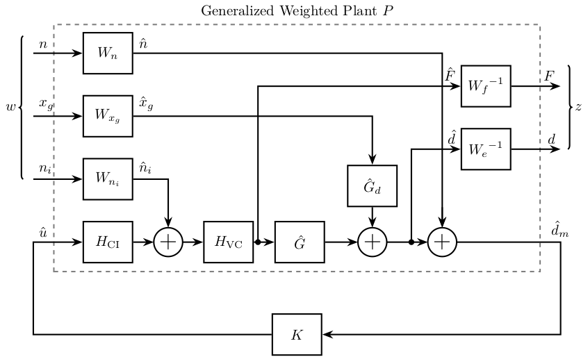
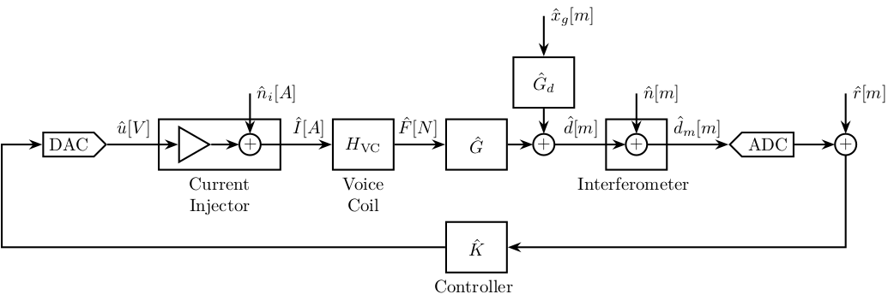

Tikz - Pendulum Experiment
Table of Contents
1 1DoF Feedback control
\begin{tikzpicture} % Blocs \coordinate[] (start) at (0, 0); \node[block, right=0.8 of start] (K) {$\hat{K}$}; \node[addb, right=0.8 of K] (addi) {}; \node[block, right=0.8 of addi] (G) {$\hat{G}$}; \node[addb, right=of G] (addy) {}; \node[block, above=0.5 of addy] (Gd) {$\hat{G}_d$}; \node[addb, below right=1 of addy] (addn) {}; % Connections and labels \draw[->] (K.east) -- (addi.west); \draw[->] (addi.east) -- (G.west) node[above left]{$\hat{F}$}; \draw[->] (G.east) -- (addy.west); \draw[->] (addy.east) -| (addn.north); \draw[->] (Gd.south) -- (addy.north); \draw[<-] (Gd.north) -- ++(0, 0.8) node[right]{$\hat{x}_g$}; \draw[<-] (addn.east) -- ++(0.8, 0) node[above](n){$\hat{n}$}; \draw[<-] (addi.north) -- ++(0, 0.8) node[right]{$\hat{n}_i$}; \draw[->] (addn.west) -| (start) -- (K.west) node[above left]{$\hat{d}_m$}; \draw[->] (addn.north|-addy.east)node[branch]{} -- (n|-addy.east) node[above]{$\hat{d}$}; \end{tikzpicture}

2 General Control Configuration
\begin{tikzpicture} % Blocs \node[block] (CI) {$H_{\text{CI}}$}; \node[addb, right=0.5 of CI] (addu) {}; \node[block, right=0.5 of addu] (VC) {$H_{\text{VC}}$}; \node[block, right=0.5 of VC] (G) {$\hat{G}$}; \node[addb, right=0.8 of G] (addy) {}; \node[block, above=0.5 of addy] (Gd) {$\hat{G}_d$}; % Input weight \node[block, above=0.5 of CI] (Wni) {$W_{n_i}$}; \node[block, above=0.5 of Wni] (Wxg) {$W_{x_g}$}; \node[block, above=0.5 of Wxg] (Wn) {$W_n$}; \node[addb, right=1 of addy] (addn) {}; % Output weight \node[block, above right=1.5 and 0.2 of addn] (We) {${W_e}^{-1}$}; \node[block, above=0.5 of We] (Wf) {${W_f}^{-1}$}; % Inputs \coordinate[left=1.2 of Wni] (ni); \coordinate[left=1.2 of Wxg] (xg); \coordinate[left=1.2 of Wn] (n); % Outputs \coordinate[right=1.2 of We] (y); \coordinate[right=1.2 of Wf] (F); \coordinate (u) at (n|-G); \coordinate (v) at (F|-G); \node[fit={($(n) + (0, 0.5) + (0.5, 0.2)$) ($(v|-CI.south) - (0.5, 0.2)$)}, inner sep=0pt, draw, dashed, color=gray, label={Generalized Weighted Plant $P$}] (P) {}; \node[draw, block, below=1 of P] (K) {$K$}; % Connections \draw[->] (CI.east) -- (addu.west); \draw[->] (addu.east) -- (VC.west); \draw[->] (VC.east) -- (G.west); \draw[->] (G.east) -- (addy.west); \draw[->] (addy.east) -- (addn.west); \draw[->] (Gd.south) -- (addy.north); \draw[<-] (addn.north) -- ++(0, 0.5); \draw[->] (ni) -- (Wni.west); \draw[->] (Wni.east) node[above right]{$\hat{n}_i$} -| (addu.north); \draw[->] (xg) -- (Wxg.west); \draw[->] (Wxg.east) node[above right]{$\hat{x}_g$} -| (Gd.north); \draw[->] (n) -- (Wn.west); \draw[->] (Wn.east) node[above right]{$\hat{n}$} -| (addn.north); \draw[->] ($(addn.west) + (-0.4, 0)$)node[branch]{} |- (We.west) node[above left]{$\hat{d}$}; \draw[->] ($(G.west) + (-0.4, 0)$)node[branch]{} |- (Wf.west) node[above left]{$\hat{F}$}; \draw[->] (We.east) -- (y); \draw[->] (Wf) -- (F); \draw[->] (addn.east) -- (v) |- (K.east); \draw[->] (K.west) -| (u) -- (CI.west); % Labels \node[above right] (un) at (u) {$\hat{u}$}; \node[above] (vn) at (v) {$\hat{d}_m$}; \node[above right] (xgn) at (xg) {$x_g$}; \node[above right] (nin) at (ni) {$n_i$}; \node[above right] (nn) at (n) {$n$}; \node[above left] (yn) at (y) {$d$}; \node[above left] (Fn) at (F) {$F$}; % W and Z brackets \draw [decoration={brace, raise=7pt}, decorate] (nin.south west) -- node[left=8pt]{$w$} (nn.north west); \draw [decoration={brace, raise=5pt}, decorate] (Fn.north east) -- node[right=6pt]{$z$} (yn.south east); \end{tikzpicture}

3 System blocs
\begin{tikzpicture} % Blocks \node[DAC] (dac) {DAC}; \node[block, minimum width=2.4cm, right=1 of dac, label={[align=center]below:Current\\Injector}] (ci) {}; \node[gain right, minimum width=0.8cm] (ci_gain) at ($(ci)+(-0.6, 0)$) {}; \node[addb, scale=0.6] (addi) at ($(ci)+(0.6, 0)$) {}; \node[block, right=1 of ci, label={[align=center]below:Voice\\Coil}] (vc) {$H_{\text{VC}}$}; \node[block, right=1 of vc] (G) {$\hat{G}$}; \node[addb, scale=0.6, right=0.5 of G] (addy) {}; \node[block, above=0.5 of addy] (Gd) {$\hat{G}_d$}; \node[block, right=1 of addy, label={[align=center]below:Interferometer}] (int) {}; \node[addb, scale=0.6] (addn) at (int) {}; \node[ADC, right=1.2 of int] (adc) {ADC}; \node[addb, scale=0.6, right=0.8 of adc] (addr) {}; \coordinate[] (adc_output) at ($(adc.east) + (0.8, 0)$); \coordinate[] (dac_input) at ($(dac.west) + (-0.8, 0)$); \node[block, below=1 of G, label={[align=center]below:Controller}] (K) {$\hat{K}$}; % Connections and labels \draw[->] (adc.east) -- (addr.west); \draw[->] (addr.south) |- (K.east); \draw[->] (K.west) -| (dac_input) -- (dac.west); \draw[->] (dac.east) -- (ci_gain.west); \draw[->] (ci_gain.east) -- (addi.west); \node[above left] at (ci.west){$\hat{u}[V]$}; \draw[->] (addi.east) -- (vc.west) node[above left]{$\hat{I}[A]$}; \draw[->] (vc.east) -- (G.west) node[above left]{$\hat{F}[N]$}; \draw[->] (G.east) -- (addy.west); \draw[->] (addy.east) -- (addn.west); \node[above left] at (int.west) {$\hat{d}[m]$}; \draw[->] (addn.east) -- (adc.west) node[above left]{$\hat{d}_m[m]$}; \draw[<-] (addr.north) -- ++(0, 0.8) node[right]{$\hat{r}[m]$}; \draw[->] (Gd.south) -- (addy.north); \draw[<-] (Gd.north) -- ++(0, 0.8) node[right]{$\hat{x}_g[m]$}; \draw[<-] (addi.north) -- ++(0, 0.8) node[right]{$\hat{n}_i[A]$}; \draw[<-] (addn.north) -- ++(0, 0.8) node[right]{$\hat{n}[m]$}; \end{tikzpicture}
